𝕱𝖑𝖆𝖛𝖔𝖚𝖗 𝕱𝖚𝖘𝖎𝖔𝖓
Home
Recipes
Breakfast
Lunch
Desserts
Salads
Fusion
AboutUs
ContactUs
SignIn
Salad can be a full meal if you know how to put it together.
Cooking is like love. It should be entered into with abandon or not at all.
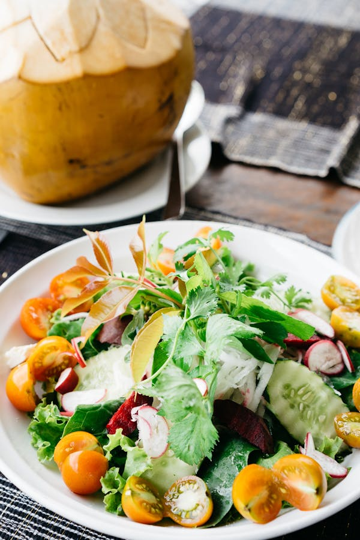
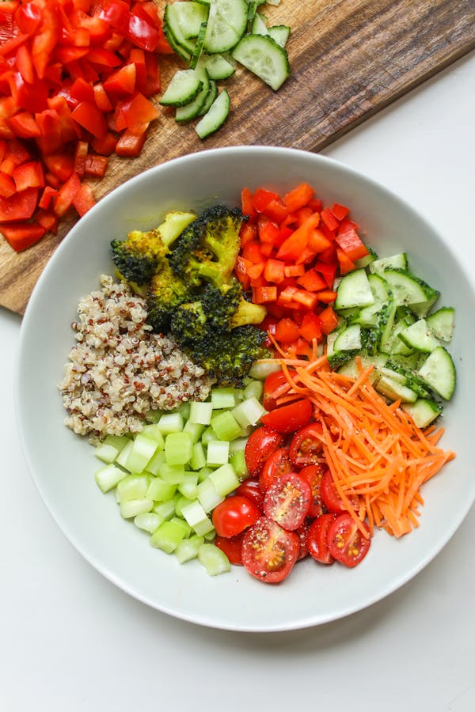
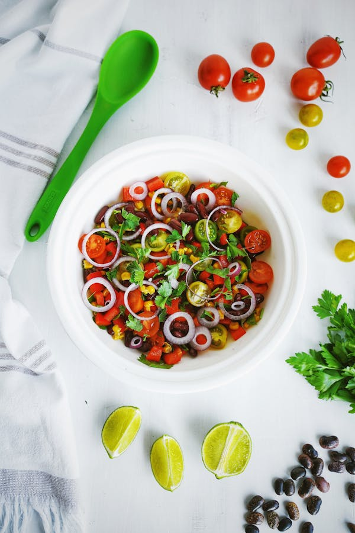
Desserts
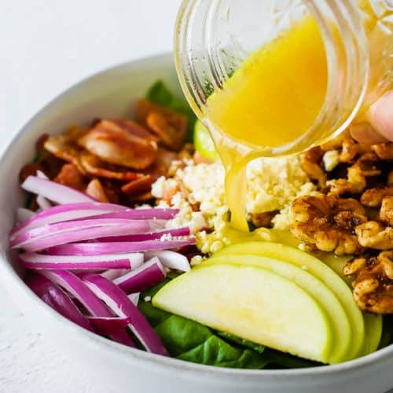
Spinach Bacon Salad
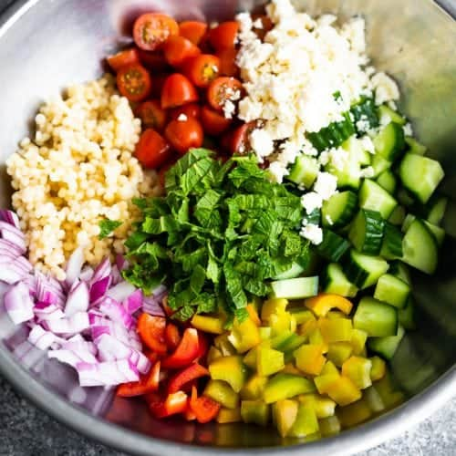
Summer Couscous Salad
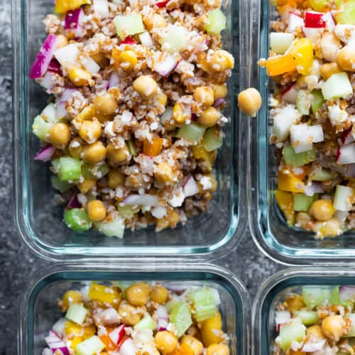
Chickpea Salad
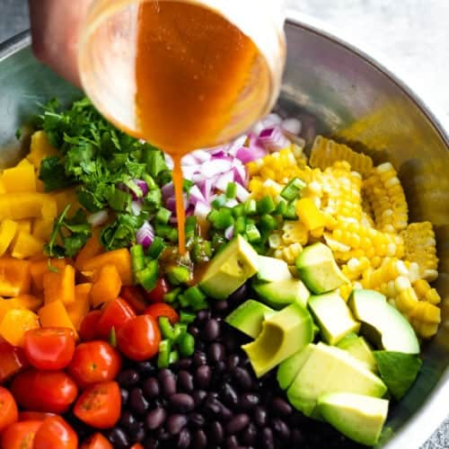
Black Bean and Corn Salad
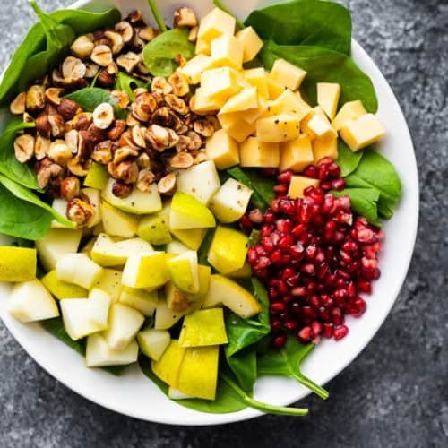
Spinach Pear Salad with Gouda and Hazelnuts
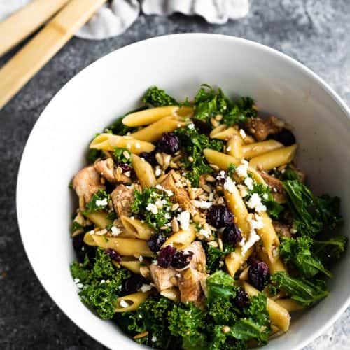
Chicken Pasta Salad
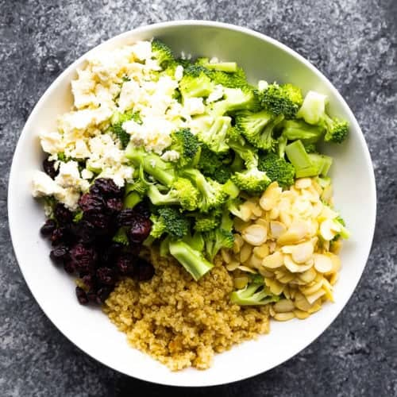
Broccoli Salad
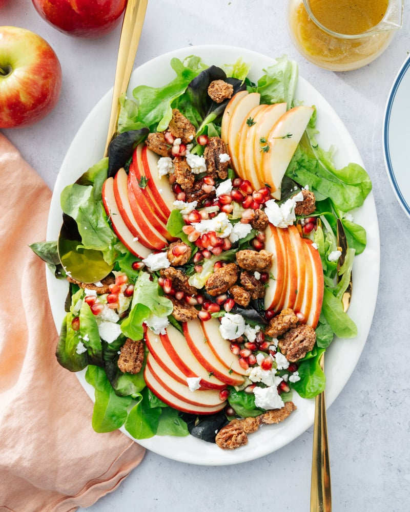
Crisp Apple Salad
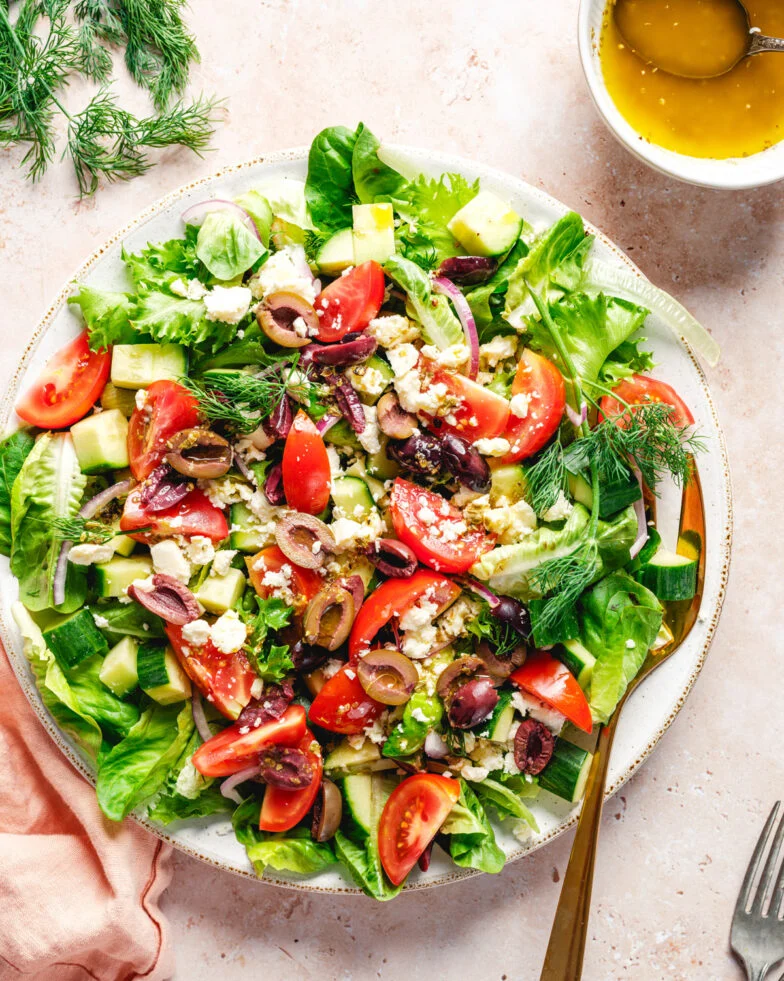
Mediterranean Salad
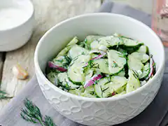
Warm Cucumber Lemon Salad
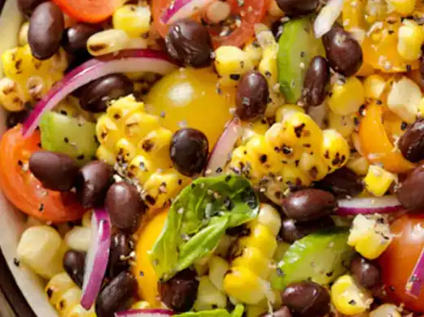
Indian Style Kachumber Salad
Crispy Noodle Salad
×